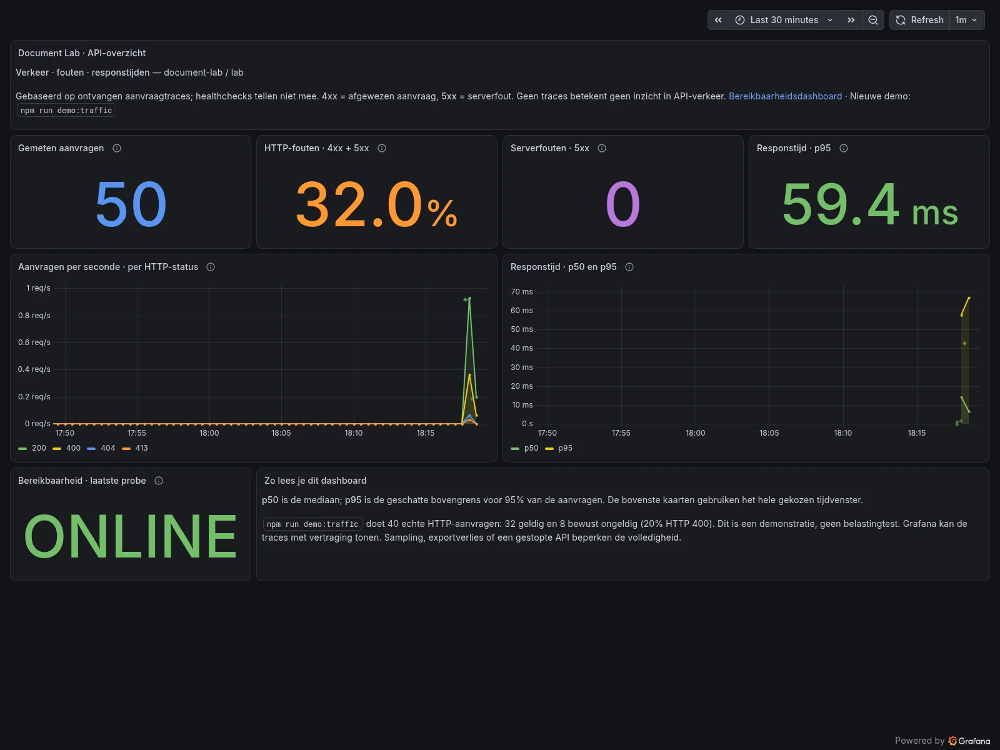
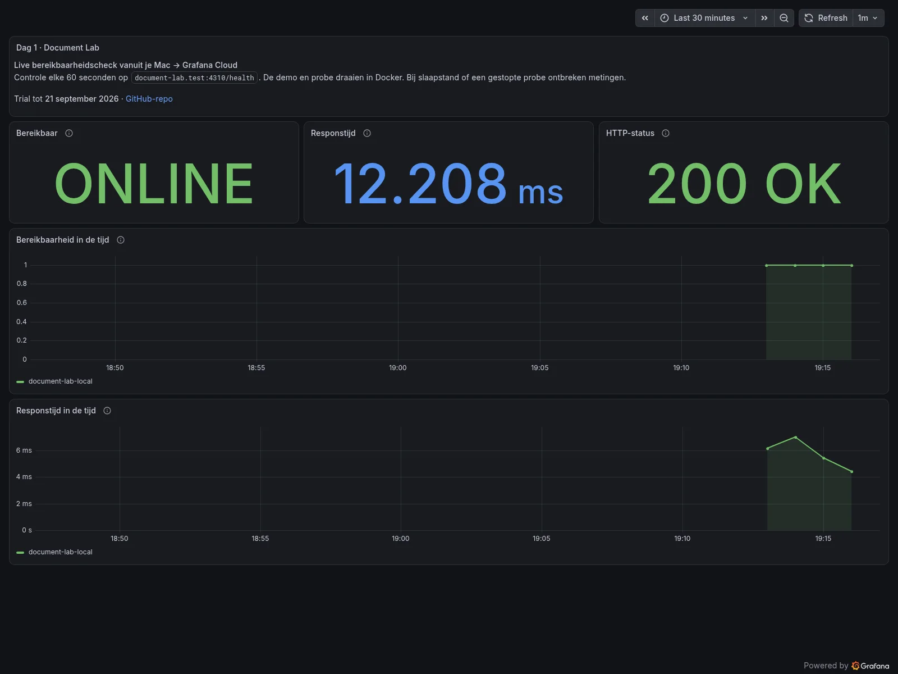
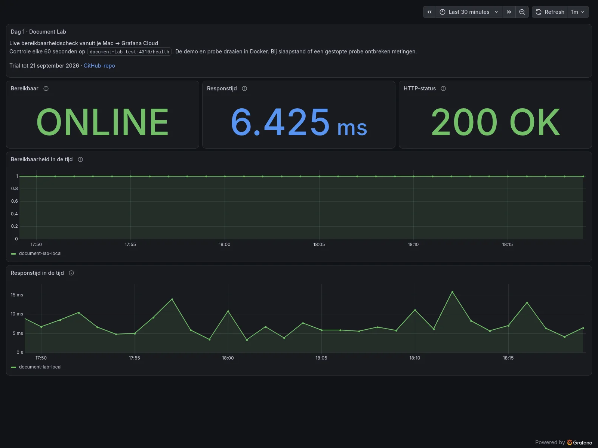

A green healthcheck doesn't explain a slow request.
This lab connects one small API to traces, logs, probes and alerts in Grafana Cloud, then breaks it on purpose. Every claim on this page comes from a saved measurement in the repository: the trace of one request, the alert timeline after an injected fault, a stepped load test and a before/after comparison of a fix.

Why it exists
"It's up" and "it works" are different questions.
An uptime check says the service answers. When a user complains that one upload was slow or failed, there is no way to tell which request it was, which step took the time, or whether the alert that fired is about now or about five minutes ago.
Every request carries a trace ID into its log line. Spans show where the time went. Alert rules on probes and logs are tested by injecting real faults, and an improvement is only claimed after measuring it before and after.
Try it · runs in your browser
Replay the lab's evidence
Four recorded exercises, rendered from the JSON files in docs/evidence/: one request traced end to end, an injected fault and the alerts it caused, a stepped load test, and a measured fix. Pick a tab.
Measurements from a local lab on one laptop. The load test shows bounded behaviour up to its planned ceiling, not a maximum or sustained production capacity.
How it works
What the lab covers
Backend hygiene
Input validation, bounded request bodies, sanitized errors and cancellation of work when the client disconnects.
Correlated telemetry
OpenTelemetry traces to Tempo and structured logs to Loki, joined by trace and request IDs. Healthchecks stay out of application telemetry.
Alerting, tested
Latency and server-error rules on probe metrics and logs, triggered by controlled fault injection and watched until they recover.
Reproducible delivery
Docker Compose with pinned image digests, a lockfile, CI that starts the stack twice from a clean checkout, and a Free-tier usage budget check.
The flow, step by step
Screens
What it looks like
Screenshots from the Grafana Cloud stack. The live stack needs an account and a running local lab, so the saved evidence is the public record.


Evidence
What is real, and what is not
REAL Built and verified
- HTTP traffic, OpenTelemetry traces, Loki logs and Grafana alert rules, against a real Grafana Cloud stack
- Fault injection, alert firing and recovery, recorded with timestamps
- k6 load steps and the cancellation comparison, with raw results committed
- CI runs the tests and starts the Docker setup twice from a clean checkout
SIMULATED Mocked or not built yet
- The API simulates document processing; storage and extraction are not implemented
- Load results come from one local machine, not a production environment
- Detailed day-by-day notes and runbooks are in Dutch
Run it yourself
Run it locally
Node.js 22+. No Grafana account needed to run the API, tests and flow check; the Cloud setup is in docs/setup.md.
git clone https://github.com/phlppgdfry/grafana-observability-lab.git
cd grafana-observability-lab
npm ci
npm start # API on http://127.0.0.1:4310
# in a second terminal
npm run check:flow # the 12-step HTTP flow
npm test
curl -X POST http://127.0.0.1:4310/api/documents/process \
-H 'Content-Type: application/json' -d '{"name":"demo.pdf"}'